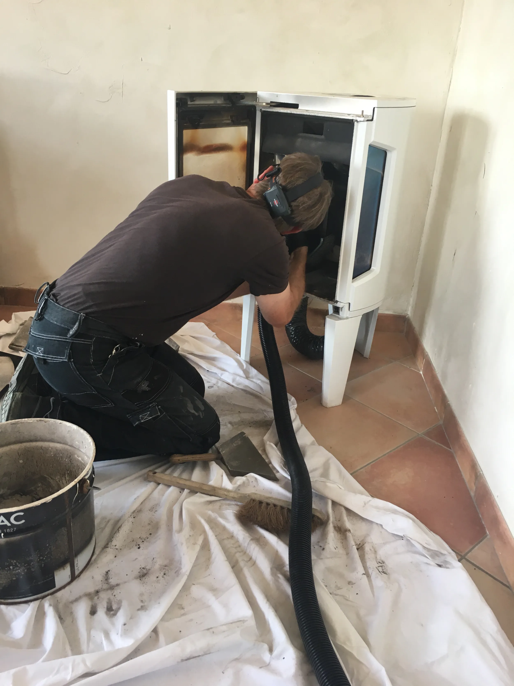
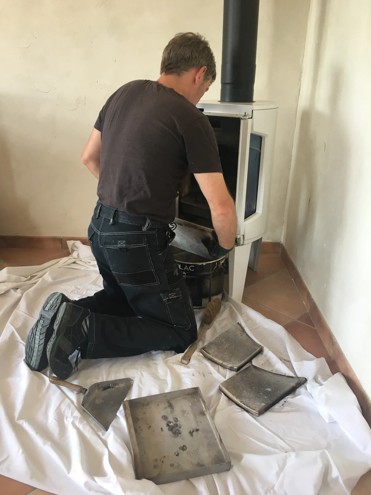
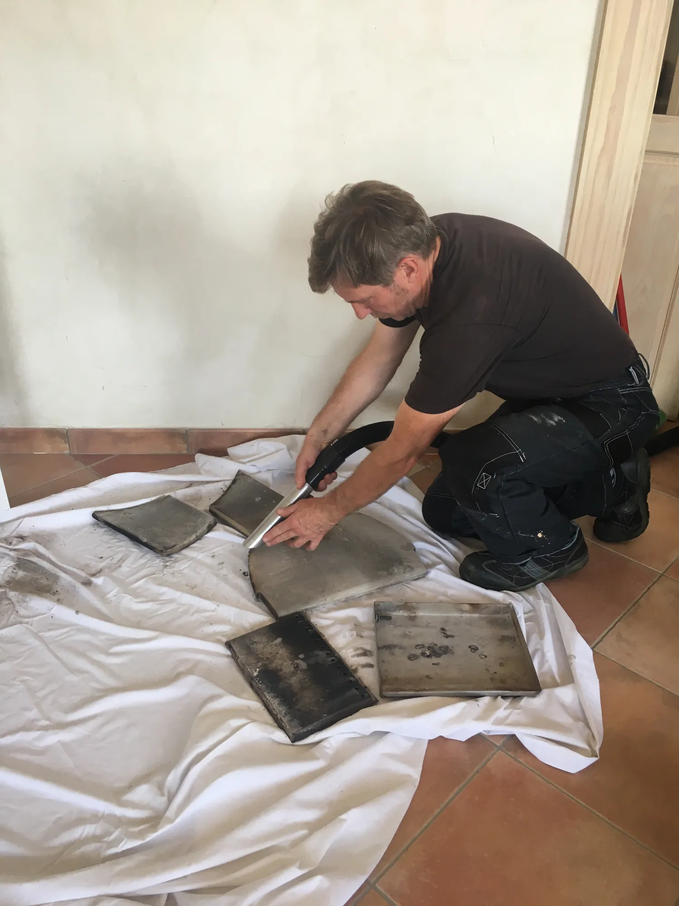

Ramonage
Poêles à bois, granulés, cheminées et chaudières : un nettoyage complet adapté à votre installation.
Ramonage · Entretien · Débistrage
Ramonage Système vous accompagne pour l'entretien et le nettoyage de vos poêles, cheminées et chaudières, avec soin et simplicité.
Une question ? Appelez-nous06 07 94 42 69
Ce que nous faisons
Un conduit entretenu, c'est un chauffage plus performant, une maison plus sûre et l'assurance d'un travail réalisé dans les règles.
Parler de votre installationPoêles à bois, granulés, cheminées et chaudières : un nettoyage complet adapté à votre installation.
Nous contrôlons les éléments essentiels pour vous aider à conserver une installation fiable et durable.
Quand les dépôts résistent, nous intervenons en profondeur pour retrouver un conduit propre et sécurisé.
En pratique
Chaque intervention commence par un geste précis, et se termine par un intérieur impeccable. Découvrez notre manière de travailler.
Parler directement à Christophe

Notre savoir-faire
Avant, pendant et après le ramonage, nous protégeons votre intérieur et prenons le temps de faire les choses correctement. Parce qu'un bon professionnel se reconnaît aussi à la propreté de son intervention.
Une expertise certifiée
Ramoneur fumiste diplômé du COSTIC.
Entretien des chauffages à granulés.
Sur le terrain
On en parle ?
Décrivez-nous votre besoin et nous vous recontacterons rapidement pour convenir d'un rendez-vous.
Les champs marqués d'un astérisque sont obligatoires.